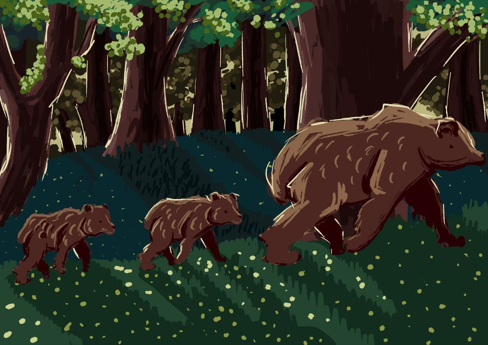

Колись це був звичайний ліс. Місце, де панували тиша й спокій,
де дерева шелестіли від вітру, струмки наповнювалися чистою водою,
а тварини жили своїм звичним життям. Вони полювали, шукали їжу,
облаштовували домівки та ростили дитинчат. Серед них був і бурий ведмідь — сильний,
вільний господар лісу, який знав кожну стежку, кожен звук і кожен куточок свого дому.
Але одного дня все змінилося.
[ Натисніть Пробіл (Space), щоб продовжити ]